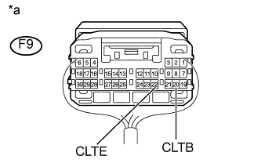
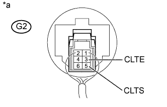
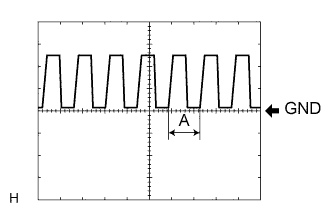

DTC B1244 Неисправность в цепи датчика освещения |
| Код DTC | Условие обнаружения DTC | Неисправный участок |
| B1244 |
|
|
| 1.ПРОВЕРЬТЕ DTC |
Удалите коды DTC (Нажмите здесь).
Проверьте коды DTC (Нажмите здесь).
|
| ||||
| OK | ||
| ||
| 2.СНИМИТЕ ПОКАЗАНИЯ ПОРТАТИВНОГО ДИАГНОСТИЧЕСКОГО ПРИБОРА (ДАТЧИК АВТОМАТИЧЕСКОГО УПРАВЛЕНИЯ ОСВЕЩЕНИЕМ) |
Считайте данные в режиме Data List портативного диагностического прибора (Нажмите здесь).
| Информация на дисплее прибора | Измеряемая величина / диапазон измерения | Нормальное состояние | Замечание по диагностике |
| Illumination Rate | Информация об интенсивности освещения / 0–99,99 мс | Значение зависит от уровня окружающей освещенности | - |
|
| ||||
| OK | ||
| ||
| 3.ПРОВЕРЬТЕ ЖГУТ ПРОВОДОВ И РАЗЪЕМ (ГЛАВНЫЙ ЭБУ КУЗОВА – ДАТЧИК АВТОМАТИЧЕСКОГО УПРАВЛЕНИЯ ОСВЕЩЕНИЕМ) |
Отсоедините разъем G64 главного ЭБУ кузова.
Отсоедините разъем H19 датчика автоматического управления освещением.
Измерьте сопротивление в соответствии со значениями, приведенными в таблице ниже.
| Контакты для подключения диагностического прибора | Условие | Заданные условия |
| G64-22 (CLTE) - H19-3 (CLTE) | Всегда | Менее 1 Ом |
| G64-21 (CLTS) - H19-5 (CLTS) | Всегда | Менее 1 Ом |
| G64-20 (CLTB) - H19-6 (CLTB) | Всегда | Менее 1 Ом |
| G64-22 (CLTE) - масса | Всегда | 10 кОм или более |
| G64-21 (CLTS) - масса | Всегда | 10 кОм или более |
| G64-20 (CLTB) - масса | Всегда | 10 кОм или более |
|
| ||||
| OK | |
| 4.ПРОВЕРЬТЕ ГЛАВНЫЙ ЭБУ КУЗОВА (БОРТОВОЙ ЭБУ СЕТИ МУЛЬТИПЛЕКСНОЙ СВЯЗИ) |
|  |
Подсоедините разъем G64 главного ЭБУ кузова.
Измерьте напряжение в соответствии со значениями, приведенными в таблице.
| Контакты для подключения диагностического прибора | Положение переключателя | Заданные условия |
| G64-20 (CLTB) - G64-22 (CLTE) | Зажигание выключено | Менее 1 В |
| Зажигание включено | 11 - 14 В |
| *a | Устройство с подсоединенным жгутом проводов (главный ЭБУ кузова) |
|
| ||||
| OK | |
| 5.ПРОВЕРЬТЕ ДАТЧИК АВТОМАТИЧЕСКОГО УПРАВЛЕНИЯ ОСВЕЩЕНИЕМ |
|  |
Подсоедините разъем H19 датчика автоматического управления освещением.
Подсоедините осциллограф к датчику автоматического управления освещением.
| *a | Устройство с подсоединенным жгутом проводов (датчик автоматического управления освещением) |
|  |
Проверьте форму сигнала.
| Контакты для подключения диагностического прибора | Настройки прибора | Положение переключателя | Заданные условия |
| H19-3 (CLTE) - H19-5 (CLTS) | 5 В/дел., 5 мс/дел./ дел. | Зажигание включено, переключатель света фар в положении AUTO | Форма сигнала должна соответствовать показанной на рисунке. |
|
| ||||
| OK | ||
| ||